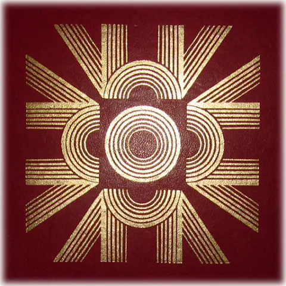

| Neděle | 27. 9. | 8:00 |
 26. neděle v mezidobí |
| Pondělí | 28. 9. | 16:30 | Slavnost sv. Václava |
| Středa | 30. 9. | - | Mše sv. se nekoná |
| Neděle | 4. 10. | 8:00 | Poutní slavnost ke sv. Michaelu Archandělovi |
| 15:00 | Svátostné požehnání | ||
| Středa | 7. 10. | 16:30 | |
| Neděle | 11. 10. | 8:00 | 28. neděle v mezidobí |